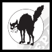

Expand each section below for more information. This will be the first place I update in case of an instance emergency
Software:
- Mastodon: 4.3.0-alpha.3+glitch
- Ruby: 3.2.3p157
- PostgreSQL: 15.5
- Redis: 7.0.15
Disk Usage (updated Mar 30):
- Database: 5.69GB
- Media: 237 GB
Admins:
Some of our local emojis. You can also use emojis from other instances!
|
:tr:
:pnw:
:gw:
 :trw: :trw:
:biw:
:nbw:
|
:darrowr:
:1312:
 :anticat:
:au:
:etrb:
:anrgb:
:throw:
:etr:
|
Fouroclockfarms.club is a small instance run by a couple queer farmers.
TL;DR
- Be cool to each other.
- No Nazis. No TERFs. No Harassment.
- This server is an 18+ server. Nudity, sexuality, and strong language
are recognized as a normal part of the human experience. Please use
appropriate content warnings.
- FourOclockFarms.club is privacy focused and does not allow full text
search, public viewing of timelines, or indexing.
Code of Conduct:
The following guidelines are not a legal document, and final
interpretation is up to the administration of fouroclockfarms.club:
Please use content warnings liberally for:
Nudity/Sexual Content, Drugs/Alcohol, Mental Health, Violence,
Injuries/Wounds/Hospitalization/etc, Food/Dieting, Politics/World
Events/etc
The following types of content (text, media), behaviors, or
rationalizations of, will be removed from the public timeline, and
users posting or promoting the following types of content will have
their access revoked:
- Sexual content involving minors, including artistic depictions
- Gore and extremely graphic violence, including artistic depictions
- Nazism, Alt-Right, Right Wing Extremism, Christian Nationalism,
Zionism, Tankies, Free Speech Extremists,
- Racism, Xenophobia, Antisemitism, Islamophobia, Bigotry,
Transphobia, Gender-critical
- Sexism, Misogyny, Sex and/or Gender Discrimination
- Image bots posting non-original or stolen content
- Untagged nudity, pornography and sexually explicit content
- Mass following and aggregation of content
- Trolling, insulting, and derogatory comments, bullying, harassment,
dog piling, stalking, impeding or interfering with service,
- Spreading falsehoods, alternative facts, anecdotal evidence,
prejudice or bias towards a social group, inciting violence, circular
reporting, shock-provoking content, conspiracy theories, dark
patterns, deepfakes, disinformation, misinformation, sensationalism,
truthiness, propaganda, rumours, hoaxes, urban myths, pseudoscience,
post-truth and opinion pieces or interviews that convey any of the
previous.
These provisions notwithstanding, the administration of the service
reserves the right to revoke any user's access permissions, at any time,
for any reason.